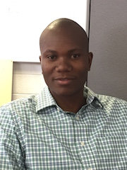
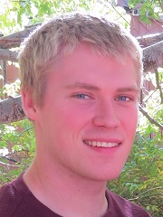
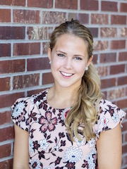

Flight, Optimization, and Wind Laboratory
© 2018. All rights reserved.
Flight, Optimization, and Wind Laboratory
© 2018. All rights reserved.

Andrew Ning is interested in the complex tradeoffs that occur in engineering design. The design of wind energy and flight systems involves strong interactions across multiple disciplines. Optimization is a useful tool in exploring these design decisions. In addition to design applications, he is interested in developing fundamental algorithms and methodologies for efficient aerodynamic analysis and optimization.
Dr. Ning received his PhD and MS degrees from Stanford University in the Aircraft Aerodynamics and Design Group. After graduation he worked at the National Renewable Energy Laboratory on wind turbine aeroelastic analysis and optimization. He loves engaging in ideas and learning with the excellent students and faculty at BYU. Outside of engineering he enjoys mountain biking, soccer, basketball, and reading.

Jared Thomas is interested in engineering and business. He is pursuing both a PhD in mechanical engineering and an MBA at Brigham Young University (BYU).
Jared’s engineering interests include design optimization, systems engineering, and renewable energy. He is developing new techniques and tools for solving the wind farm layout optimization problem in the pursuit of creating more efficient wind farms. He has created and contributed to several open-source tools including WISDEM/FLORISSE, OpenMDAO, and WakeExchange.
Jared’s primary business interests are strategy and product management. He has worked with local and international companies doing business consulting. Jared is an MBA intern at Coreform, a tech startup in Provo, Utah, and is a partner in the BYU Marriott School’s Cougar Strategy Group (CSG).
Jared received his BS degree from BYU in 2015, with minors in music and mathematics. He enjoys spending time with his wife and kids exploring the outdoors, making music, and experimenting with sourdough.

PJ Stanley is researching optimization of mixed turbine wind farms. He loves optimization of wind energy because it involves solving challenging problems, and can be used to make the world a better place. Many people can be helped with further developments in this field.
PJ is from St. Louis Missouri, and graduated from BYU with a BS in Mechanical Engineering in 2016. He is currently working towards a PhD. He loves sports, especially basketball and baseball, as well as reading science fiction and spending time with friends.

Taylor McDonnell has many interests, the foremost of which is UAVs. He is currently researching HALE UAV aeroelasticity and plans to extend this research into aeroservoelasticity. He is excited about the many potential applications of UAVs and hopes his work will offer valuable insights in developing HALE UAVs that can remain airborne for months at a time. He earned his BS degree in Mechanical Engineering from BYU in 2016. In his spare time he enjoys movies, music, sports, hiking, and flying remote control aerial vehicles.

Judd Mehr graduated from BYU with a Bachelor of Science degree in April of 2016, majoring in Mechanical Engineering with a minor in Mathematics. He is currently researching the multidisciplinary design and optimization of High Altitude Long Endurance aircraft. Judd is most recently from American Fork, Utah, but has spent time living in California, Illinois, Texas, and Virginia. In addition to engineering, he enjoys designing and building projects at home, hiking, cycling, camping, cooking, and going on small adventures.

Bertelsen Gagakuma is from Ghana, West Africa and studied Physics at the University of Ghana (BSc). He is interested in mechanical and thermal systems engineering (particularly applications involving aerodynamics and fluid interactions). He hopes to develop new technology, and methods to improve transportation systems and energy production. Hobbies include learning about aircrafts, cars, and modern technology in general. He appreciates philosophical books and instrumental music (new age and classical), loves meeting new people, and strongly believes that a person must develop spirit, body, and mind in order to live a fulfilling life.

Eduardo Alvarez is interested in the aerodynamics of electric VTOL aircraft, or “flying cars.” His past experience has involved compressible flow in shock tubes, solid propulsion in experimental rocketry, fluid-structure interaction along the larynx, and reliability of wind turbines. He is now researching propeller-propeller and propeller-wing aerodynamic interactions involved in the design of electric aircraft. After completing the common core of Science and Engineering at the University of Chile, he earned his B.S. degree in Mechanical Engineering from BYU-Idaho in 2017. In his spare time he enjoys jazz music, experimental rocketry, and poetry.

Ryan Barrett is working towards an MS degree in mechanical engineering and an MBA. He is from Salt Lake City, Utah and is researching wind turbine blade optimization.

Kevin Moore is fascinated with flight and aerodynamics and is working to make his dreams reality through advanced experimental and computational techniques. Currently he is investigating vertical axis wind turbine aerodynamics and design with smaller projects relating to unmanned aerial vehicles. In his spare time, Kevin enjoys snow and water skiing as well as mountaineering.

Bryce Ingersoll is from Seattle, Washington, and is working towards his MS degree in Mechanical Engineering. He is finishing a paper on UAV path planning optimization and is investigating wake models for horizontal axis wind turbines. Outside of engineering, Bryce enjoys hiking, riding motorcycles, playing sports, and spending time with family.

Jenna Newcomb is following in her father’s footsteps by pursuing an MS degree in mechanical engineering. She is currently researching optimization programming and is thrilled to be working with Dr. Peterson and Dr. Ning on a flight path optimization project. Last summer she interned with the Office of Naval Research in Patuxent River, Maryland where she worked on optimization of sabot design for a ballistic air gun. In her free time, she gets away from the lab to enjoy outdoor sports including skiing, snowboarding, rock climbing, hiking and camping. She misses her horse Finn, who she left back in her hometown of Pittsford, New York.

Teagan Nakamoto grew up on a chicken farm on the Big Island of Hawai’i and graduated April 2017 from BYU with his BS Mechanical Engineering degree and a minor in editing. He is researching applications of convex optimization to wind farm design. Among a great many other things, Teagan enjoys reading Brandon Sanderson books, running mountainous trails, eating Spam musubis, and listening to metal remakes of Disney songs.

Nicholas F. Baker graduated from UNLV Cum Laude with a B.S. in Computer Science in 2008. He then departed on a two-year LDS mission and upon his return commissioned as an officer in the United States Marine Corps. He is currently a Captain in the USMC Reserves and as a reservist returned to UNLV to complete a second B.S. Magna Cum Laude in Mathematics in 2016. He is currently at BYU working towards an MS degree in Mechanical Engineering researching wind turbine efficiency and optimization.